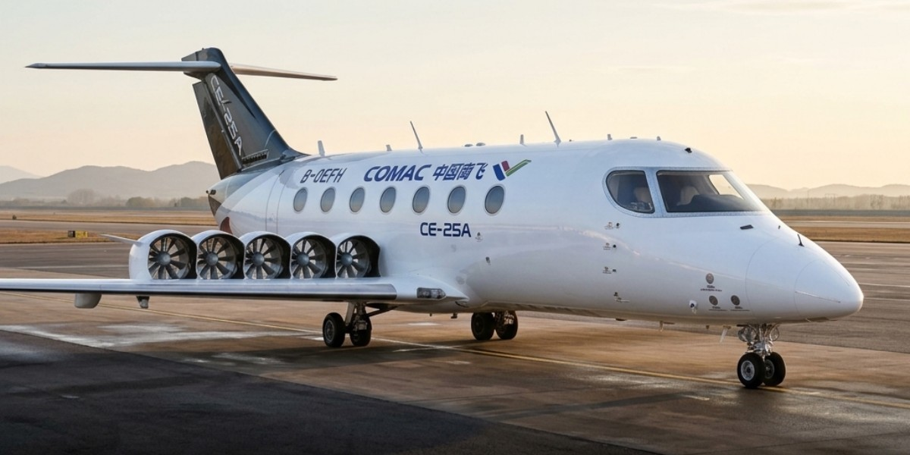

Geekotidien · Édition du 23 novembre 2026
Premier vol habité chinois
Le CE-25A de COMAC a effectué son premier vol d'essai avec des personnes à bord

Le 14 novembre 2026, le CE-25A, avion électrique de COMAC, a effectué son premier vol d'essai habité, depuis Binzhou (Shandong), avec deux pilotes et un ingénieur d'essai. Il a parcouru 60,4 km en 16 min 38 s.
Selon les caractéristiques citées, l'appareil pèse 10 tonnes, transporte 19 passagers, croise à 300 km/h et a une autonomie d'environ 400 km. Il est équipé de dix ventilateurs électriques. Des vols sans équipage ont été menés depuis février 2026, soit 19 vols.
La coentreprise a été lancée en juillet 2023, avec un capital de 600 millions de yuans (environ 90 millions de dollars), avec CATL et l'université Shanghai Jiao Tong. La certification de l'autorité de l'aviation civile chinoise est en cours. L'information vient d'une seule source, Xinhua, citée par l'article, sans responsable nommé.
Le + : L'avion vole à 300 km/h en croisière, pour une autonomie d'environ 400 km.